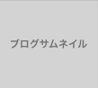

Wrdpress Navi
小手先のテクニックに頼らないサイト構築技法の完全解説サイト
ログイン
新規登録
wordpressお助け隊広告バナー
デザイナー募集
ブログを作る
企業サイトを作る
ECサイトを作る
メディアを作る
検索サイトを作る

解説記事へ
テーマダウンロード
テーマ利用規約
WordPressNavi 初級編
WordPressでブログを作ってみよう!!
超基本!WordPressテンプレート階層から用意すべきPHPファイルを・・・
WordPressにオリジナルテーマを設置し、テーマを有効化する。
BootStrapでHTMLを組み込む。SEOも意識しよう。
WordPress関数の使い方を覚えてブログをより豊かにする。
記事を読む
b
c
d
e
特集
環境構築基本セミナー
レンタルサーバを借りてWordPressを安定運営
VPSで高負荷に耐える運営環境作りをしよう
AWSで学ぶクラウドインフラ構築技法
ローカル環境構築について
環境構築基本セミナー
レンタルサーバを借りてWordPressを安定運営
VPSで高負荷に耐える運営環境作りをしよう
AWSで学ぶクラウドインフラ構築技法
ローカル環境構築について
環境構築基本セミナー
レンタルサーバを借りてWordPressを安定運営
VPSで高負荷に耐える運営環境作りをしよう
AWSで学ぶクラウドインフラ構築技法
ローカル環境構築について
More Read
管理者プロフィールや運営方針、お問い合わせはこちらから
PR
トラブルQ&A
サイトが突然真っ白になった！
サイトが重たい
サイトに人が来ない
案件を受けてしまった・・・